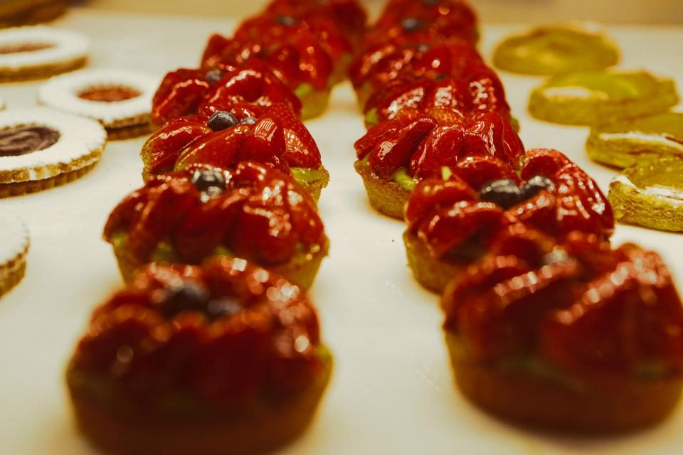

店のこと
店のこと
確認できているのは、所在地・電話番号・Instagramのアカウントです。
「想像してみる」部分は制作側の想像です。お店の実際の様子・考え・メニューとは関係ありません。
確認できていること
- 店名は「パティスリー パレット」、業種はカフェ(パティスリー)
- 所在地は新潟県新潟市中央区沼垂西1丁目2-26(〒950-0076)
- 電話番号は025-250-0864
- Instagramのアカウントがあります
- 営業時間・定休日・メニュー・価格・ご予約・駐車場は準備中

想像してみる
「パレット」という名前から
由来は分かりません。制作側は、パレットといえば絵の具を並べて混ぜる板、そしてお菓子づくりで使うパレットナイフを連想しました。色とりどりのものが並ぶ様子を思い浮かべています(実際のお店の姿ではありません)。

